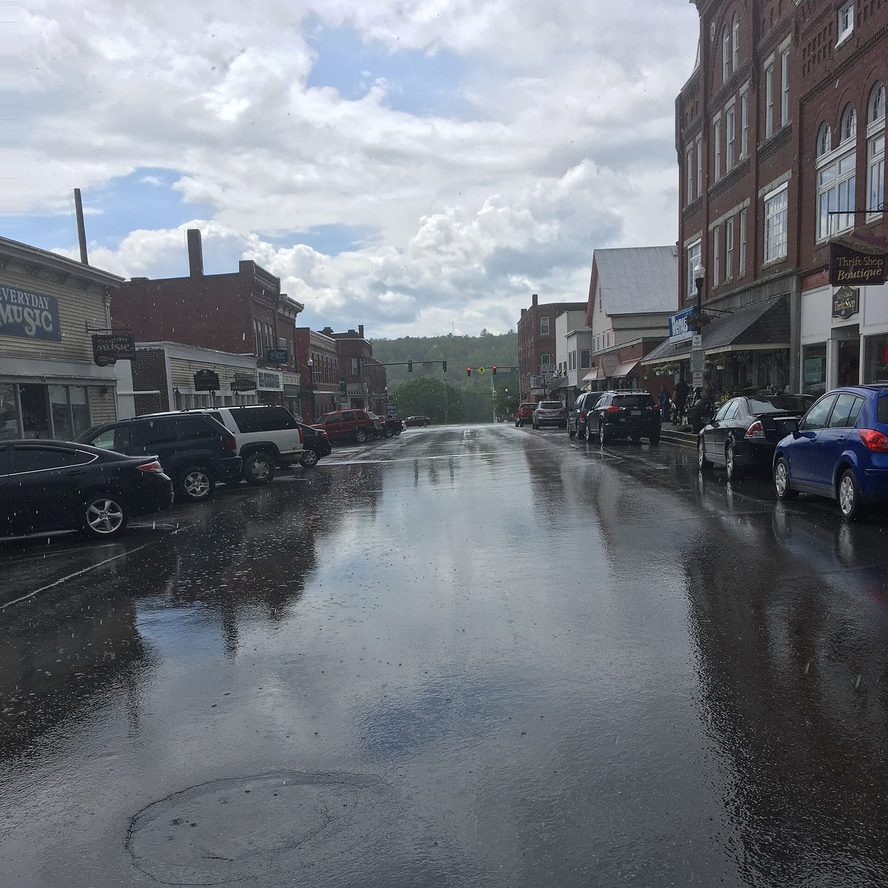

미국 메인주 파밍턴 읍, 커뮤니티 솔라 업체 제안 결정 보류…읍이 민간 업체 홍보 맡는 데 우려

시카고 업체 솔라 심플리파이드, 전력 고객에 태양광 크레딧 15% 할인·가입 1곳당 읍에 100달러 제안…위원들은 경쟁 업체 설명도 들어 보는 방안 검토
미국 메인주 파밍턴(Farmington) 읍 선출위원회(Select Board)가 13일 회의에서 한 커뮤니티 솔라 업체의 협력 제안을 듣고도 아무 결정을 내리지 않았다. 일리노이주 시카고의 업체 솔라 심플리파이드(Solar Simplified)는 전력회사 센트럴메인파워(CMP) 고객 가운데 자격을 갖춘 가구와 사업장이 지붕에 패널을 달거나 전력회사를 바꾸지 않고도 태양광 크레딧을 15% 할인받을 수 있다고 설명했다. 업체는 가입하는 가구·사업장 1곳마다 읍에 100달러를 내겠다는 조건도 내걸었다. 위원들은 읍이 민간 회사의 서비스를 알리는 일에 나서는 데 대한 우려를 다시 꺼냈고, 결정에 앞서 경쟁 업체들의 설명도 들어 보는 방안을 검토했다. 파밍턴에는 2021년 거의 완공된 490에이커 규모의 별도 태양광단지도 있다.
시민에너지 관점
15% 할인과 가입 1곳당 100달러는 주민과 읍 모두에게 솔깃한 조건이지만, 이 구조에서 주민은 할인 고객, 읍은 가입을 모아 주는 창구에 머문다. 공공이 특정 민간 업체를 알려도 되느냐는 위원들의 걱정은 타당하며, 답은 공공이 업체를 골라 주는 데 있지 않고 주민이 함께 소유하는 발전소를 세우도록 판을 까는 데 있다. 덴마크가 2009년부터 2020년까지 새 풍력단지 지분 20%를 지역 주민에게 내놓도록 한 것처럼, 주민이 주인이 되어야 할인을 넘어 발전 수익 자체가 지역에 남는다. 국내 지자체도 주민 참여를 업체 가입 홍보로 좁히지 말고 주민 출자와 공공 지분을 갖춘 시민 발전소로 설계해야 한다.
출처: Lewiston Sun Journal 2026-10-23 Rebecca Richard 원문 보기
米メイン州ファーミントン町、コミュニティソーラー企業の提案の判断を保留…町が民間企業の宣伝役を担うことに懸念
シカゴのソーラー・シンプリファイド、電力顧客に太陽光クレジット15%割引・加入1件ごとに町へ100ドルを提案…委員は競合企業の説明も聞く案を検討
米メイン州ファーミントン（Farmington）町の行政委員会（Select Board）は13日の会合で、あるコミュニティソーラー企業から協力の提案を受けたが、何も決めなかった。イリノイ州シカゴの企業ソーラー・シンプリファイド（Solar Simplified）は、電力会社セントラル・メイン・パワー（CMP）の顧客のうち条件を満たす世帯と事業所が、屋根にパネルを付けたり電力会社を変えたりしなくても太陽光クレジットを15%割引で受けられると説明した。同社は加入する世帯・事業所1件ごとに町へ100ドルを支払うという条件も示した。委員らは町が民間企業のサービスの宣伝に乗り出すことへの懸念を改めて示し、判断の前に競合企業の説明も聞く案を検討した。ファーミントンには2021年にほぼ完成した490エーカー規模の別の太陽光発電所もある。
市民エネルギーの視点
15%の割引と加入1件あたり100ドルは住民にも町にも魅力的な条件だが、この仕組みでは住民は割引を受ける顧客、町は加入を集める窓口にとどまる。行政が特定の民間企業を宣伝してよいのかという委員の懸念はもっともで、答えは行政が企業を選んでやることではなく、住民が共に所有する発電所をつくれるよう環境を整えることにある。デンマークが2009年から2020年まで新しい風力発電所の持ち分20%を地域住民に提供するよう義務づけたように、住民が持ち主になってこそ、割引を超えて発電収益そのものが地域に残る。韓国の自治体も住民参加を企業の加入勧誘に狭めず、住民出資と公的な持ち分を備えた市民発電所として設計すべきだ。
出典: Lewiston Sun Journal 2026-10-23 Rebecca Richard 原文を読む
美国缅因州法明顿镇暂缓决定社区光伏企业提案…担忧镇政府为民营企业做宣传
芝加哥企业Solar Simplified向电力用户提出光伏抵扣额度15%折扣、每加入1户向镇政府支付100美元…委员们考虑也听取竞争企业的介绍
美国缅因州法明顿（Farmington）镇行政委员会（Select Board）13日开会听取了一家社区光伏企业的合作提案，但没有作出任何决定。伊利诺伊州芝加哥的企业Solar Simplified介绍说，电力公司中缅因电力（CMP）的用户中符合条件的家庭和商户，无需在屋顶安装光伏板或更换电力公司，就能以15%的折扣获得光伏抵扣额度。该公司还提出，每有1户家庭或商户加入，就向镇政府支付100美元。委员们再次表达了对镇政府出面宣传民营公司服务的担忧，并考虑在作决定前也听取竞争企业的介绍。法明顿还有一座2021年基本建成、占地490英亩的另一处光伏电站。
市民能源视角
15%的折扣和每户100美元对居民和镇政府都颇具吸引力，但在这种结构下，居民只是享受折扣的客户，镇政府只是招揽用户的窗口。委员们担心公共部门不应为特定民营企业做宣传，这一顾虑是合理的；出路不在于由公共部门替居民挑选企业，而在于为居民共同拥有的发电站搭好舞台。正如丹麦在2009年至2020年间要求新建风电场把20%的股份提供给当地居民那样，只有居民成为主人，留在当地的才不只是折扣，而是发电收益本身。韩国的地方政府也不应把居民参与缩小为替企业招揽用户，而应把它设计成有居民出资和公共持股的市民电站。
来源: Lewiston Sun Journal 2026-10-23 Rebecca Richard 查看原文
Farmington, Maine, holds off on community solar pitch amid concern over the town promoting a private company
Chicago-based Solar Simplified offered power customers a 15% discount on solar credits and $100 to the town per sign-up; board members considered hearing from competing providers too
The Select Board of Farmington, Maine, heard a partnership proposal from a community solar company at its Oct. 13 meeting but took no action. Solar Simplified, based in Chicago, Illinois, said eligible households and businesses among Central Maine Power (CMP) customers could receive solar credits at a 15% discount without putting panels on their roofs or switching electricity providers. The company also offered to pay the town $100 for every household or business that enrolls. Board members again voiced concern about the town taking part in promoting a private company's services and considered hearing from competing providers before deciding. Farmington is also home to a separate 490-acre solar farm that was nearly complete in 2021.
Citizen Energy View
A 15% discount and $100 per sign-up sound attractive to residents and the town alike, but under this arrangement residents remain discount customers and the town a recruitment desk. The board's worry about government promoting a particular private firm is well founded, and the answer is not for the public sector to pick a vendor but to lay the groundwork for power plants that residents own together. As Denmark showed when it required new wind farms to offer 20% of their shares to local residents from 2009 to 2020, only when residents become owners does the generating income itself, not just a discount, stay in the community. Korean local governments, too, should not reduce resident participation to signing people up for a company, but design it as citizen power plants with resident investment and public stakes.
Source: Lewiston Sun Journal 2026-10-23 Rebecca Richard Read the original